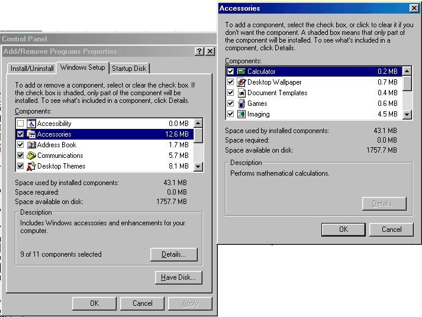
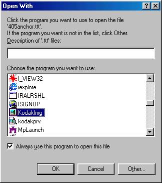

|
In order to save on telephone charges when sending faxes TLD Asia uses
an Internet Fax system. All incoming faxes are received by a fax server
rather than a fax machine. These faxes are stored as electronic files
and the distributed by email. If you receive one of these files and
don't know how to open it then read on.
First you need to check whether you have software to cope with the
.fax format.
A software package called Kodak Imaging comes free with Microsoft Windows.
- Go to the START menu and select SETTINGS:Control Panel.
- Double click on "Add/remove programs" (see figure 1).
- Double click on "Accessories".
- Make sure there is a tick beside the item "Imaging". If
there isn't then click tick it.
- Click OK, OK and it should start installing if it not already installed.
- The installation program may ask you for the Windows CDROM. Insert
the CDROM and follow the onscreen instructions.

Figure 1.
Associate the .fax extension to this program
In order to automatically use this program to open all .fax documents
do the following which needs only to be done once after you install
the program.
- If the .fax document is in an email then copy it to your desktop
by dragging it there or right clicking and selecting "save as..",
save it to your desktop temporarily.
- Go to your desktop and double click on the .fax document.
- Windows will not recognise the extension and ask you to select a
program to use to open it (see figure 2).
- Scroll down the list box until you get to "KodakImg".
- Highlight it.
- Tick the "Always use this program to open this file".
- Click OK.
- The program will now run and open up the .fax document.

Figure 2
If you have any problems then please contact your local admin or webmaster@tld-gse.com
|